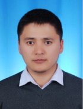

Сатыбаев РусланПроживание: Россия, г. НовокузнецкТел: +7 (923) 611 5220 medtehnik850@gmail.com Руслан Сатыбаев @ruslansatybaev аккаунт GitHub https://github.com/RuslanSatybaev https://www.linkedin.com/in/ruslan-satybaev-012685154 |  |
Желаемая должность: | Java разработчик |
Квалификация |
|
Опыт работы |
|
ИП Гаврыш |
|
| 09/2021- 05/2022: | Hybris разработчик Разработка и поддержка 2 интернет магазина. 1.продажа автомобильных шин. 2. продажа термооборудования. |
New Innovation Technology |
|
| 06/2020-09/2020: | Бекенд java разработчик Принимал участие в разработке медицинской букинг-платформы, где выполнял роль архитектора базы данных PostgreSQL 12, MySQL и разрабатывал прототип видеоконференции и чата общения. |
Образование | |
Geekbrains |
|
| 2020: | Курс "Java быстрый старт", Интенсив “Основы программирования" |
Udemy |
|
| 2020: | Курс "Spring для начинающих" Заур Трегулов |
Северо-Региональное Эстонская Больница |
|
| 09/2018-02/2019: | Медицинский физик ядерной медицины |
Национальная Академия Наук Кыргызской Республики |
|
| 2010-2013: | Аспирантура(лаборатория нано-информационных технологий) |
Кыргызский Национальный Университет им.Ж.Баласагына |
|
| 2005-2010: | Инженер по электронике и микроэлектронике |